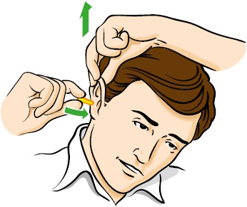
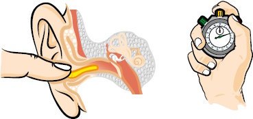
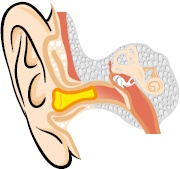
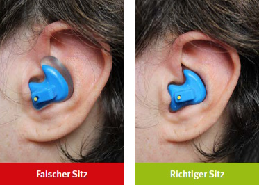

Abb. 17 Zusammenrollen von Gehörschutzstöpseln

Abb. 18 Einführen von Gehörschutzstöpseln in den Gehörgang
Allgemeines
Ziel der Unterweisung mit praktischen Übungen ist die Sicherstellung der sachgerechten Benutzung von Gehörschutz. Das bedeutet, dass Fehler bei der Verwendung von Gehörschutz und damit eine reduzierte Schalldämmung ausgeschlossen oder minimiert werden sollen. Es wird empfohlen, im Rahmen der Unterweisung auch die individuelle Schutzwirkung (siehe Abschnitt 7.12) zu bestimmen.
Ziel der Unterweisung zur qualifizierten Benutzung ist das Erreichen der bei der Baumusterprüfung ermittelten Schalldämmwerte, die von der Herstellfirma beim Inverkehrbringen der Gehörschützer angegeben werden.
Gehörschutzstöpsel
Fehler, die durch Training vermieden werden können, sind
Diese Probleme sollten anhand betrieblicher Beispiele demonstriert werden.
Speziell trainiert werden muss das Einsetzen von vor Gebrauch zu formenden Gehörschutzstöpseln. Dabei sollte man wie folgt vorgehen:
Der Gehörschutzstöpsel muss vor dem Einsetzen in den Gehörgang durch Drücken oder Drehen zwischen den Fingerspitzen zu einer dünnen Rolle geformt werden.
Der gerollte Gehörschutzstöpsel muss sofort in den Ohrkanal eingesetzt werden. Nur so kann man ihn mit geringem Durchmesser richtig positionieren, siehe Abbildung 17.
Gehörschutzstöpsel lassen sich besser in den Ohrkanal einführen, wenn dieser durch Ziehen am Ohr begradigt wird, siehe Abbildung 18.
Nach dem Einsetzen in den Gehörgang ist der Stöpsel mit dem Finger zu fixieren, siehe Abbildung 19.
Das Fixieren soll so lange fortgesetzt werden, bis sich der Stöpsel vollständig an den Gehörgang angelegt hat (mindestens 30 Sekunden, besser ein bis zwei Minuten bzw. nach Herstellerangaben), siehe Abbildung 20.
Bei fertig geformten Gehörschutzstöpseln ist darauf zu achten, dass der Stöpsel tief genug in den Gehörgang eingesetzt wird. Drehbewegungen beim Einsetzen oder das Ziehen am Ohr, um den Gehörgang zu begradigen, können dabei unterstützen. Insbesondere bei Lamellenstöpseln ist sicherzustellen, dass eine Lamelle komplett abdichtet.
Gehörschutz-Otoplastiken
Auch das Einsetzen von Otoplastiken ist vor dem erstmaligen Gebrauch zu üben. Üblicherweise hat das Passstück für das rechte Ohr eine rote Markierung und für das linke Ohr eine blaue Markierung.
Jedes Passstück wird durch eine leichte Drehbewegung eingesetzt. Auch hier kann es erforderlich sein, dass durch Ziehen am Ohr der Gehörgang begradigt bzw. der Otoplastik-Form angepasst wird. Hinweise aus der Benutzerinformation der Herstellfirma, wie die Otoplastik beim Einsetzen zu greifen und auszurichten ist, sollten beachtet werden.
Bei Concha-Otoplastiken ist darauf zu achten, dass das Passstück richtig in der Ohrmuschel sitzt, siehe Abbildung 21.
Einige Herstellfirmen empfehlen, bei den ersten Anwendungen der Otoplastik eine mitgelieferte Creme zu verwenden, um das Einsetzen zu erleichtern.

Abb. 19 Fixieren des Gehörschutzstöpsels im Gehörgang

Abb. 20 Korrekt eingesetzter Gehörschutzstöpsel

Abb. 21 Falscher und korrekter Sitz einer Concha-Otoplastik
Kapselgehörschutz
Bei der Verwendung von Kapselgehörschutz ist während der Unterweisung darauf hinzuweisen, dass es zur Verringerung der Schutzwirkung insbesondere durch folgende Einflüsse kommen kann:
Zusätzliche Inhalte für die qualifizierte Benutzung
Im Gegensatz zur Unterweisung entsprechend DGUV Vorschrift 1 ist die Unterweisung zur qualifizierten Benutzung mindestens viermal jährlich durchzuführen. Mindestens jährlich ist für Gehörschutzstöpsel (inkl. Gehörschutz-Otoplastiken und auch in Kombination mit einem Kapselgehörschutz) eine Kontrolle der individuell erreichten Schutzwirkung durchzuführen. Diese individuelle Kontrolle kann im Rahmen der Unterweisung mit Übungen oder durch den Betriebsarzt bzw. die Betriebsärztin durchgeführt werden. Die DGUV Information 212-003 "Messsysteme zur Bestimmung der individuellen Schutzwirkung von Gehörschutz" beschreibt die verfügbaren Verfahren und gibt Hinweise zur Anwendung.
Anmerkung: Es wird empfohlen, die individuelle Kontrolle bei jedem Unterweisungstermin durchzuführen.
Zeigen sich Leckagen, die auch durch sorgfältiges Ein- oder Aufsetzen nicht beseitigt werden können, sollten die Übungen wiederholt oder ein anderer Gehörschutz-Typ verwendet werden. Um die Praxisabschläge entfallen zu lassen, muss die Bestimmung der individuellen Schutzwirkung zeigen, dass keine Leckagen vorliegen.